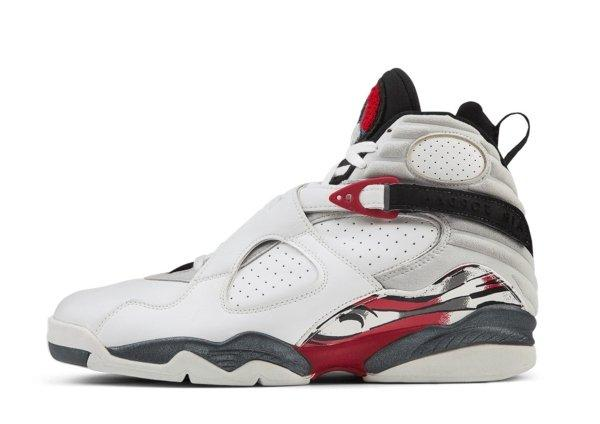

História do Air Jordan 8:
O Air Jordan 8 foi lançado em 1993, encerrando a primeira fase da carreira de Michael Jordan na NBA, antes de sua primeira aposentadoria. Ele usou o modelo durante a conquista do seu terceiro título consecutivo com o Chicago Bulls, completando o primeiro three-peat da carreira.
Projetado por Tinker Hatfield, o AJ8 é conhecido por ser um dos modelos mais robustos da linha. Ele trouxe como principais inovações as duas tiras cruzadas no peito do pé, que garantem mais suporte, além de um acolchoamento reforçado no colar do tênis e o logo "carpet" (bordado em chenille) na língua.
O design pesado e ousado dividiu opiniões na época, mas com o tempo, o AJ8 se tornou um clássico cultuado por fãs e colecionadores.